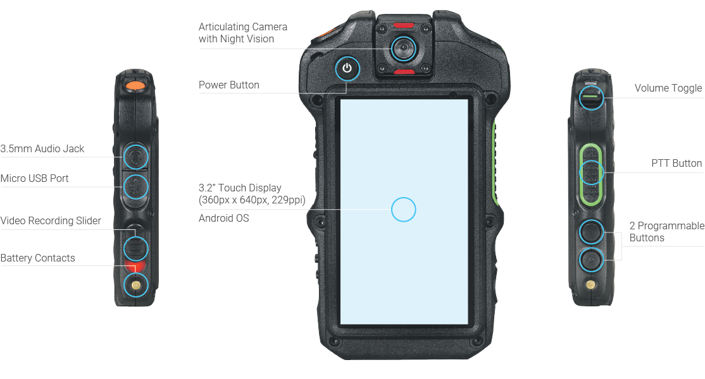
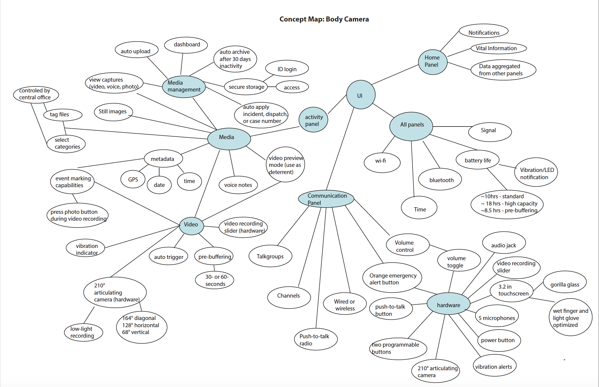
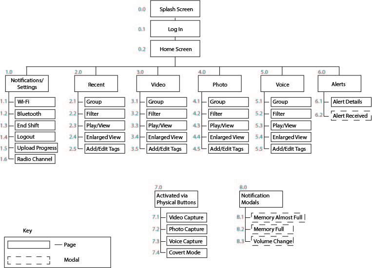
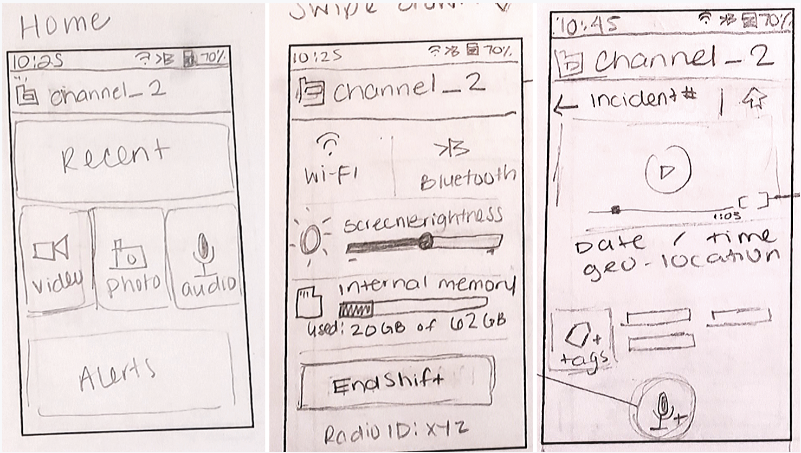
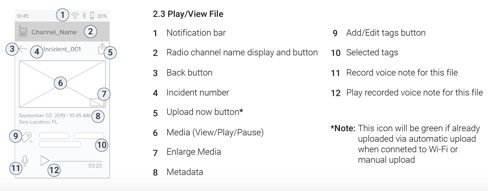
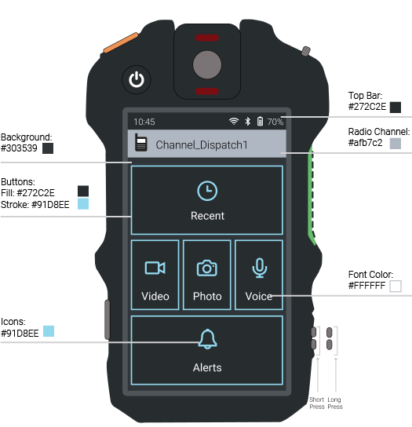
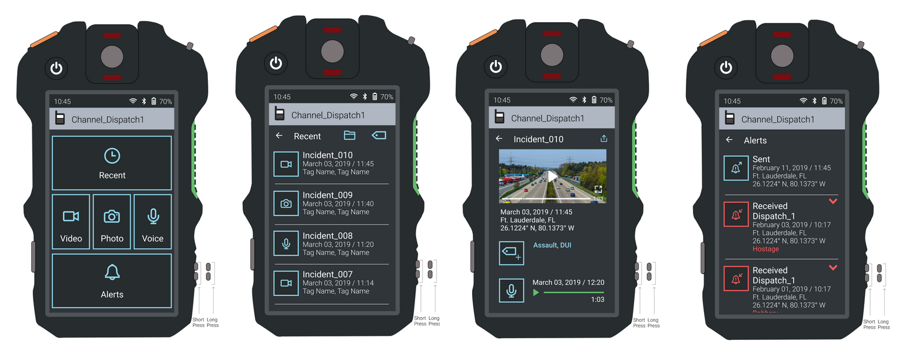

UX/UI
The objective of this project was to design and develop an interactive mobile application for public safety body-worn cameras. The target users of these cameras include police first responders, frontline officers, highway patrol, and corrections officers.
This project is based on the existing hardware for the Motorola si500. This project not sponsored by Motorola.
My assumption for this project is that officers will share the device. All media will be automatically uploaded when connected to approved Wi-Fi networks, or when users end their shift. Data is saved to a secured cloud and erased before device is used by a different officer.
These are the features I designed for. This device uses Android OS and has a 3.2″ (360px x 640px, 229 ppi) touchscreen display. It has a 210-degree articulating camera with night vision, a Push-To-Talk (PTT) button, power button, volume toggle, two programmable buttons (they can incorporate both short-press and long-press), an emergency button, and a video record slider. This product also has the ability to go into Covert Mode, which allows the device to continue recording even though the touch screen display, LEDs, and Radio are turned “off.”
Below is an image of the physical hardware.

I conducted secondary research to learn more about the existing device and how it compares to other body-worn cameras. I was able to find competitors and compare device features. Currently, there are few touch screen device options on the market.
This device was designed as an accessory, not a stand-alone device. It is able to connect to a media management dashboard on a computer, so the goal for the device I was designing for was to keep it simple and leave the more in-depth user actions for the dashboard.
Concept maps helps us visualize how everything relates. I created a concept map to organize the different device features and functions. The main categories of my concept map are: Home Panel, Communications, Media, Media Management, and Video Capabilities.
I created task and user flows to further understand behaviors for each task. Below is a list of tasks I designed for and two examples of my task flows. Click here to view all flows.
Originally, I had considered allowing photo capture via touchscreen and a programmable button. Later, I chose to make this feature accessible only via a programmable button so officers will not have to remove the device from their uniform to view the screen.
The task flows helped me identify which pages would be needed on the app. I went through a few iterations of the site map as I continued to better organize the main pages and subpages. Below is my final site map.

Using the site map as a guide, I created several sketches of the different pages, functions, and notifications the user would see. Below are the initial sketches for the home page, the settings menu, and a media page. Click here to view all sketches.

I created wireframes to further organized page content, behaviors, and structures. Click here to view all annotated wireframes.

I created a style guide to go along with my final prototype. Click here to view the full style guide.

I began building my prototype by choosing a color palette. I chose a “dark mode” because it is usable in both low-light and day-light settings. Dark mode helps keep colors limited and simple. In addition, I wanted to reflect the colors used in police uniforms in the United States.

You can try out my prototype for the body-worn camera app below. Click here to open fullscreen.